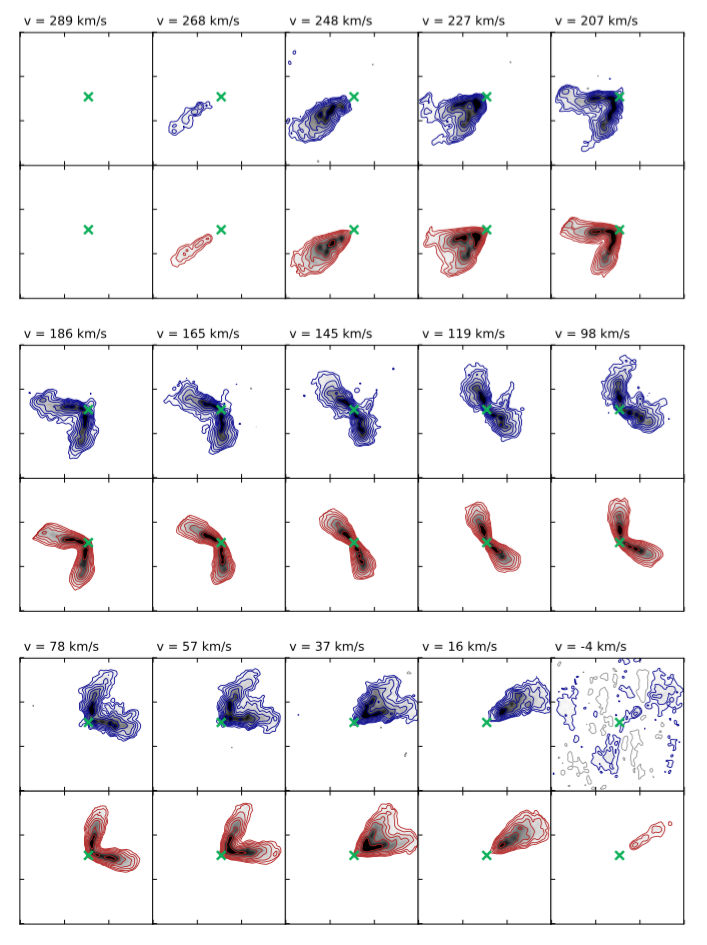
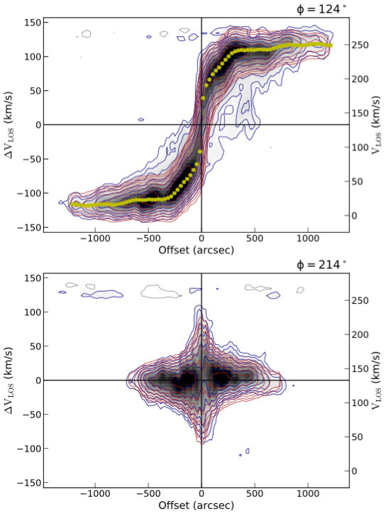
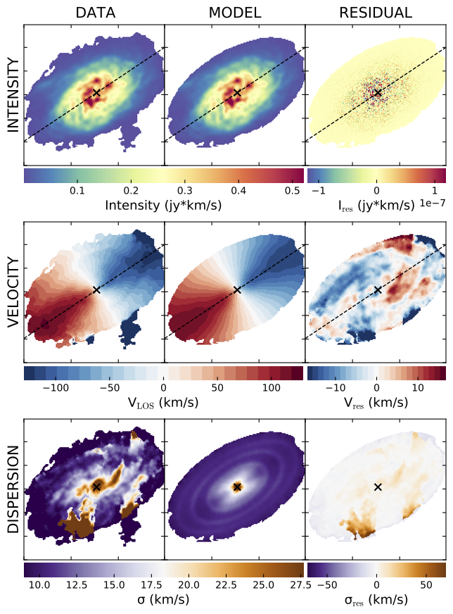
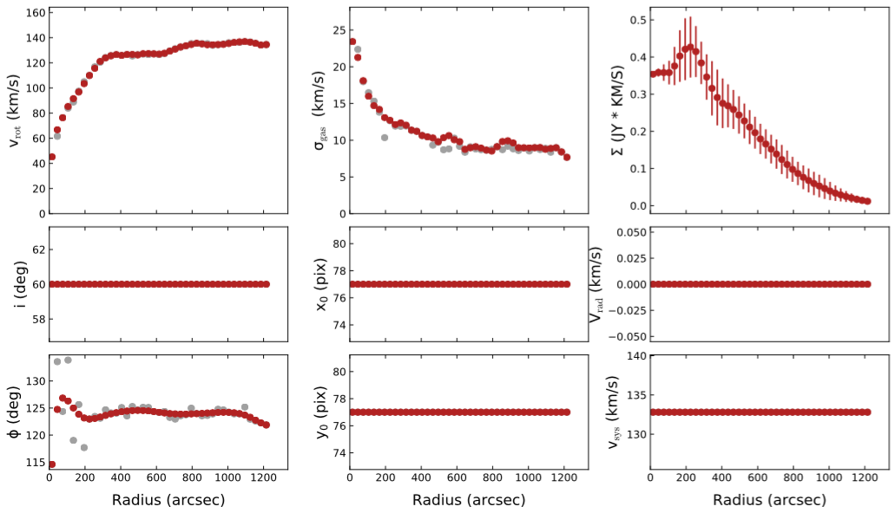
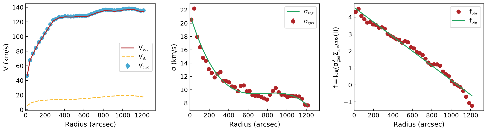

3DFIT task¶
3DFIT is the main BBarolo’s routine: it fits a 3D tilted-ring model to an emission-line data-cube. Algorithms used are described in this paper.
Parameters¶
3DFIT [false]. This flag enables the 3D fitting algorithm. Can be true or false. The old flag GALFIT is now deprecated and will be no more supported in future BBarolo’s releases.
Rings input¶
Following parameters are used to define the initial set of rings used for the fit. All parameters are allowed to vary ring-by-ring or they can just be fixed to their initial value.
All parameters listed below (except NRADII and RADSEP) can be given in the form of a single value valid for all rings or through a text file containing values at different radii. In this second case, the syntax to be used is file(filename,N,M), where filename is the name of the file with values, N is the column number (counting from 1) and M is the starting row (all rows if omitted). A subset of rows can also be selected using the syntax file(filename,N,start:stop), where start and stop are the first and last row to be considered.
If any of the following parameters is not explicitly specified, BBarolo will estimate an appropriate initial value for that parameter.
NRADII [none]. The number of rings to be used and fitted. If not given, BBarolo will determine it from the radial extension of the emission line.
RADSEP [none]. The separation between rings in arcsec. If N radii have been requested, the rings will be placed at N*RADSEP + RADSEP/2. If not given, it will be equal to the FWHM of the beam major axis.
RADII [none]. This parameter can be used as an alternative to NRADII and RADSEP. RADII can be 1) a text file (see above) with ring specified or 2) a list of radii or 3) a string in the format Rmin~Rmax:step (for example 60~180:60 will center rings at 60, 120 and 180 arcsec).
XPOS [none]. X-center of rings. Accepted format are in pixels (starting from 0, unlike GIPSY) or in WCS coordinates in the format +000.0000d (degrees) or +00:00:00.00 (sexagesimal). If not specified, it is determined from the centroids of the emission.
YPOS [none]. Like XPOS, but for the y-axis.
VSYS [none]. Systemic velocity in km/s. If not given, it is estimated as the central velocity in the global line profile.
VROT [none]. Rotation velocity in km/s.
VDISP [8]. Velocity dispersion in km/s.
VRAD [0]. Radial velocity in km/s.
INC [none]. Inclination in degrees. If not given, it is guessed from the total map.
PA [none]. Position angle in degrees of the receding side of the galaxy, measured anti-clockwise from the North direction. If not given, it is estimated from the velocity field.
Z0 [0]. Scale-height of the disc in arcsec.
DENS [1]. Gas surface density in units of 1E20 atoms/cm2. Fit of this parameter is not currently implemented and its value is not relevant if a normalization is used. If DENSFLUX is true, the DENS parameter is interpreted as an integrated flux divided by area in arcsec2.
Main options¶
Some important parameters that can be used to control 3DFIT. All following parameters have default values and are therefore optional.
FREE [VROT VDISP INC PA]. The list of parameters to fit. Can be any combination of VROT, VDISP, VRAD, VSYS, INC, PA, Z0, XPOS, YPOS.
MASK [SEARCH]. This parameter tells the code how to build a mask to identify the regions of genuine galaxy emission. Accepted values are SMOOTH, SEARCH, SMOOTH&SEARCH, THRESHOLD, NONE or a FITS mask file:
SMOOTH: the input cube is smoothed according to the smooth parameters and the mask built from the region at S/N>BLANKCUT, where BLANKCUT is a parameter representing the S/N cut to apply in the smoothed datacube. Defaults are to smooth by a FACTOR = 2 and cut at BLANKCUT = 3.
SEARCH: the source finding is run and the largest detection used to determine the mask. The source finding parameters can be set to change the default values.
SMOOTH&SEARCH: first smooth to a lower resolution and then scan the smoothed data for sources. Parameters for smoothing and source-finding are the same as the SMOOTH and SEARCH tasks.
SMOOTHSPEC&SEARCH: first smooth spectrally then scan the smoothed data for sources. Parameters for smoothing and source-finding are the same as the SMOOTHSPEC and SEARCH tasks.
THRESHOLD: blank all pixels with flux < THRESHOLD. A THRESHOLD parameter must be specified in the same flux units of the input datacube.
NONE: all regions with flux > 0 are used.
file(fitsname.fits): A mask FITS file (i.e. filled with 0s and 1s).
_ENLARGE + a number N can be appended to the above string to enlarge the mask by N pixels. For example SEARCH_ENLARGE5 will use the SEARCH algorithm and then grow the mask by 5 pixels at the edges.
NORM [AZIM]. Type of normalization of the model. Accepted values are: LOCAL (pixel by pixel), AZIM (azimuthal) or NONE. Up to three values can be given, representing the normalizations to use for the first and fitting second steps and for the writing of the final model.
TWOSTAGE [true]. This flag enables the second fitting stage after parameter regularisation. This is relevant just if the user wishes to fit parameters other than VROT, VDISP and VRAD. The inclination and the position angle are regularised by polynomials of degree POLYN or a Bezier function (default), while the other parameters by constant functions.
REGTYPE [auto]. Type of regularisation to use for second fitting stage. Accepted values are auto (the code will choose), bezier (Bezier interpolation), median (take the median), or a positive integer n for a nth-degree polynomial interpolation. It is possible to choose different types for INC, PA, VSYS, XPOS, YPOS and Z0 with a list of keyword-value pairs separated with whitespaces. A single value is used only to set INC and PA together. For example:
REGTYPE bezier # Bezier function for INC and PA, 'auto' for others REGTYPE INC=1 PA=median # A line for INC, median for PA REGTYPE INC=2 PA=0 VSYS=bezier # A parabola for INC, a constant for PA, bezier for VSYS
POLYN [-1]. DEPRECATED. It will be discontinued after v1.6, use REGTYPE instead.
LINEAR [0.85]. This parameter controls the spectral broadening of the instrument. It is in units of channel and it represents the standard deviation, not the FWHM. The default is for data that has been Hanning smoothed, so that FWHM = 2 channels and LINEAR = FWHM/2.355.
SIDE [B]: Side of the galaxy to be fitted. Accepted values are: A = approaching, R = receding and B = both (default)
FLAGERRORS [false]. Whether the code has to estimate the errors. This heavily slows down the run.
ADRIFT [false]. If true, calculate the asymmetric drift correction. First regularize velocity dispersion and density profile and then compute the correction following classical prescription (see e.g. Iorio et al. 2017).
ADRIFTPOL1 [3]. Degree of polynomial function used to regularize the velocity dispersion in the computation of the asymmetric drift correction. If set to -1, it will not regularize it and just use the ring-by-ring best fit.
ADRIFTPOL2 [3]. Degree of polynomial function used to regularize the function log(VDISP**2*SIGMA) in the computation of the asymmetric drift correction.
Advanced options¶
Additional optional parameters to refine the fit for advanced users.
DELTAINC [5]. This parameter fixes the boundaries of parameter space at [INC-DELTAINC, INC+DELTAINC]. It is not advisable to let the inclination varying over the whole range [0,90].
DELTAPA [15]. This parameter fixes the boundaries of parameter space at [PA-DELTAINC, PA+DELTAPA]. It is not advisable to let the position angle varying over the whole range [0,360].
DELTAVROT [inf]. This parameter fixes the boundaries of parameter space at [VROT-DELTAVROT, VROT+DELTAVROT]. Default is no limit.
MINVDISP [0]. Minimum gas velocity dispersion allowed.
MAXVDISP [1000]. Maximum gas velocity dispersion allowed.
FTYPE [2]. Function to be minimized. Accepted values are: 1 = chi-squared, 2 = |mod-obs|, (default) and 3 = |mod-obs|/(mod+obs)).
WFUNC [2]. Weighting function to be used in the fit. Accepted values are: 0 = uniform weight, 1 = |cos(θ)| and 2 = cos(θ)^2, default), where θ is the azimuthal angle (= 0 for galaxy major axis). Negative values can be used to set a sin(θ) weight: -1 = |sin(θ)| and -2 = sin(θ)^2.
LTYPE [1]. Layer type along z. Accepted values are: 1 = Gaussian (default), 2 = sech^2, 3 = exponential, 4 = Lorentzian and 5 = box.
CDENS [10]. Surface density of clouds in the plane of the rings per area of a pixel in units of 1E20 atoms/cm^2 (see also GIPSY GALMOD).
NV [nchan]. Number of subclouds in the velocity profile of a single cloud (see also GIPSY GALMOD). Default is the number of channels in the datacube.
BWEIGHT [1]. Exponent of weight for blank pixels. See Section 2.4 of reference paper for details. Large numbers mean that models that extend further away than observations are severely discouraged.
STARTRAD [0]. This parameter allows the user to start the fit from the given ring. Indexing from 0.
NOISERMS [0] If > 0, Gaussian noise with rms = NOISERMS will be added to the final model cube.
NORMALCUBE [true]. If true, the input cube is normalized before the fit. This usually helps convergence and avoids issues with very small flux values.
BADOUT [false]. If true, it writes also unconverged/bad rings in the output ringfile (with a flag identifying them).
VELDEF [AUTO]. Velocity definition to convert frequency/wavelength axis into velocity. Accepted values are RADIO, OPTICAL or RELATIVISTIC. If AUTO (default), the code will use radio definition if spectral axis is frequency and relativistic definition if spectral axis is wavelength.
PLOTMASK [false]. If true, the mask contour is overlaid on the channel maps and PVs plots.
PLOTMINCON [-1]. Minimum flux contour to use in channel map and PV plots. Must be positive. If not given or negative, the code will estimate an appropriate contour. Contour levels will be set at [1,2,4,8,…] x PLOTMINCON.
Parameters for high-z galaxies¶
For high-z galaxies the following additional parameters are available.
REDSHIFT [0]. The redshift of the galaxy.
RESTWAVE [none]. The rest wavelength of the line you want to fit, if the spectral axis of the data is wavelength. Units must be the same of the spectral axis of the cube. For example, if we want to fit the H-alpha line and CUNIT3 = “angstrom”, set a value 6563. It can be a single value, or a list of values for fitting multiple lines at the same time.
RESTFREQ [none]. The rest frequency of the line you want to fit, if the spectral axis of the data is frequency. Units must be the same of the spectral axis of the cube. The rest frequency value is often read from the FITS header and does not need to be explicitly set by the user. If set, the RESTFREQ value overrides the header value. It can be a single value, or a list of values for fitting multiple lines at the same time.
These parameters are used to calculate the conversion from wavelengths/frequencies to velocities. The velocity reference is set to 0 at RESTWAVE*(REDSHIFT+1) or RESTFREQ/(REDSHIFT+1). VSYS has to be set to 0, but can be also used to fine-tune the redshift. Finally, if these two parameters are not set, BBarolo will use the CRPIX3 as velocity reference and the proper VSYS has to be set based on that.
RELINT [1]. A list of line ratios for multiple line fitting. The number of ratios must be the same of given RESTFREQ or RESTWAVE.
Outputs¶
The 3DFIT task produces several outputs to check the goodness of the fit. In the following NAME is the name of the galaxy and NORM is the kind normalization used.
A FITS file NAMEmod_NORM.fits, containing the best-fit model datacube.
A FITS file mask.fits, containing the mask used for the fit.
FITS files of position-velocity cuts taken along the average major and minor axes for the data and the best-fit model. In particular:
NAME_pv_a.fits: P-V of the data along the major axis.
NAME_pv_b.fits: P-V of the data along the minor axis.
NAMEmod_pv_a_NORM.fits: P-V of the model along the major axis.
NAMEmod_pv_b_NORM.fits: P-V of the model along the minor axis.
FITS files of the moment maps for the data and the model. These can be found in the maps subdirectory:
NAME_0mom.fits, NAME_1mom.fits, NAME_2mom.fits: 0th, 1st and 2nd moment maps of the data.
NAME_NORM_0mom.fits, NAME_NORM_1mom.fits, NAME_NORM_2mom.fits: 0th, 1st and 2nd moment maps of the model.
Text files rings_final1.txt and rings_final2.txt, containing the ring best-fit parameters for the first and second fitting steps. The file rings_final2.txt is only produced if TWOSTAGE is true.
A text file densprof.txt, with the radial intensity profiles along the best-fit rings.
If ADRIFT is true, a text file asymdrift.txt with the asymmetric drift correction parameters.
Plotting scripts to produce output plots with Gnuplot/Python can be found in the plotscripts subdirectory.
A PDF file NAME_chanmaps_NORM.pdf with a channel-by-channel comparison of data and model cubes.

A PDF file NAME_pv_NORM.pdf with a comparison of data and model P-Vs taken along the average major and minor axes.

A PDF file NAME_maps_NORM.pdf with a comparison of data and model moment maps.

A PDF file NAME_parameters.pdf with the best-fit parameters.

If ADRIFT is true, a PDF file asymmetricdrift.pdf with the asymmetric drift correction.

Example¶
Above outputs can be obtained with the following parameter file and the usual example datacube.
FITSFILE ngc2403.fits
THREADS 4
/////////// 3DFIT parameters /////////////
3DFIT true
// Input rings
NRADII 41
RADSEP 30
VSYS 132.8
XPOS 77
YPOS 77
VROT 120
VDISP 8
INC 60
PA 123.7
Z0 10
// Free parameters
FREE VROT VDISP PA
// Normalization type
NORM LOCAL
// Mask
MASK SEARCH
// Other options
LTYPE 2
FTYPE 2
DISTANCE 3.2
BWEIGHT 1
WFUNC 2
TWOSTAGE true
ADRIFT true
///////////////////////////////////////////
Guidelines for a successful fit¶
To obtain a good fit with very low resolution data, I usually follow some basic steps:
Fitting several galaxies at the same time¶
An experimental function of BBarolo 1.5 allow the user to fit several galaxies at the same time. This can be useful, for example, when a large sample needs to be analysed on a supercluster. BBarolo launches a number of MPI processes and each process takes care of a galaxy at a time.
To use this function, you need to compile BBarolo with MPI:
> make mpi
If you have an MPI interface (OpenMPI, MPICH, etc…), this command will create an executable BBarolo_MPI in the working directory. You need to prepare a text file with a list of parameter files params.list and then run BBarolo_MPI through mpirun:
> mpirun -np NPROC BBarolo_MPI -l params.list
where NPROC is the number of MPI processes. Each MPI process can be also run in multi-thread mode with the usual THREADS parameter. This is basically the same of running NPROC instances of BBarolo, each with a single parameter file.